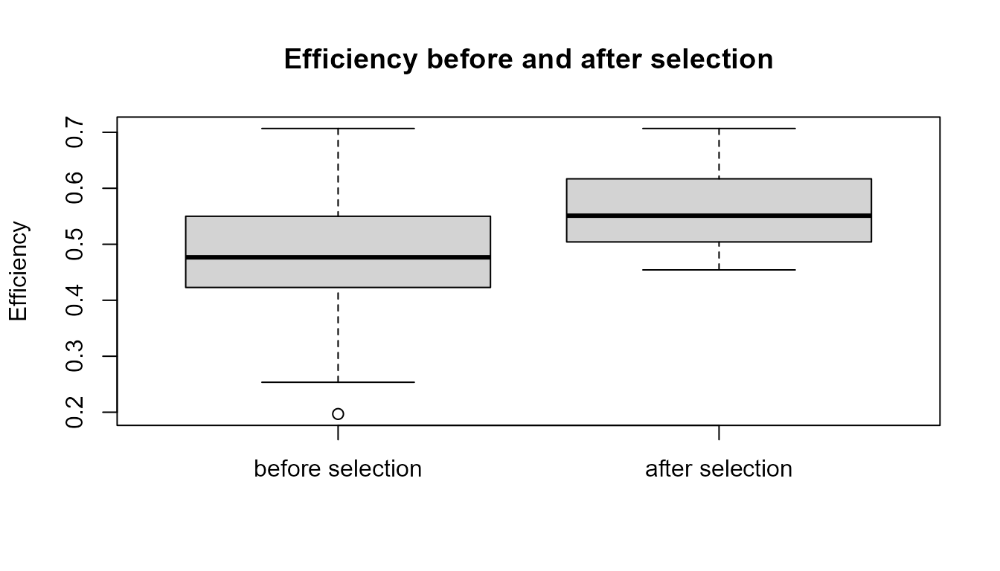

Purpose
This article explains selection and adaptation in artificial-life models. Selection occurs when some agents persist or reproduce more than others because of differences in traits, energy, or fitness-like scores (Darwin 1859; Maynard Smith 1982; Nowak 2006).
The purpose of this chapter is to show how individual differences can lead to population-level change.
The guiding question is:
How can individual differences lead to population-level change?
Why selection matters
Selection is one of the central ideas in artificial life and evolutionary modelling. It connects individual-level differences to population-level change.
A population may contain agents with different traits. Some agents may move faster, use resources more efficiently, have more energy, or reproduce more easily. If these differences affect survival or reproduction, the composition of the population can change over time.
This is the basic logic of selection:
If traits differ, and some differences affect persistence or reproduction, then populations can change.
Selection as differential persistence
Selection does not require intention, planning, or awareness. It requires three basic ingredients:
- Variation: agents differ from one another.
- Consequences: some differences affect survival or reproduction.
- Persistence: some traits become more common or less common over time.
In a resource-limited artificial world, agents with higher energy or efficiency may be more likely to persist. Over time, the population may become enriched for certain traits.
This process is selection-like. It does not mean the agents are trying to adapt. It means that the rules of the model cause some agents or traits to persist more than others.
Fitness as a model quantity
In real evolutionary biology, fitness is a complex concept related to reproductive success in a particular environment. In artificial-life models, fitness is often simplified as a score.
A fitness-like score may depend on:
- energy;
- efficiency;
- speed;
- survival;
- reproduction;
- resource access;
- environmental fit.
In artificialLifeR, selection is simplified for
teaching. The goal is not to fully model biological fitness. The goal is
to show how a population can change when some agents have higher
persistence or success under a rule.
Relation to the package
The function simulate_selection() applies simplified
selection to a population of agents.
| Argument | Conceptual meaning |
|---|---|
agents |
Starting population |
survival_fraction |
Fraction of agents retained after selection |
stochastic |
Whether chance influences survival |
seed |
Reproducibility |
Selection can be deterministic or stochastic.
In deterministic selection, the highest-scoring agents are
retained.
In stochastic selection, chance can influence which agents survive, even
if some agents have an advantage.
Example: create a population
Start with a population of artificial agents.
agents <- create_agents(
n_agents = 80,
seed = 6
)
head(agents)
#> agent x y energy speed efficiency
#> 1 1 0.6062683 0.18803406 1.3912147 0.06669120 0.1968795
#> 2 2 0.9376420 0.09770574 0.9923440 0.05945517 0.5184279
#> 3 3 0.2643521 0.33274923 1.3340791 0.05862615 0.4783738
#> 4 4 0.3800939 0.78447211 0.9979192 0.05942922 0.6164912
#> 5 5 0.8074834 0.33664980 0.7678900 0.08473781 0.4549085
#> 6 6 0.9780757 0.49656295 0.7930166 0.06809653 0.4746094
#> reproduction_threshold age alive
#> 1 1.441391 0 TRUE
#> 2 1.618974 0 TRUE
#> 3 1.433508 0 TRUE
#> 4 1.501668 0 TRUE
#> 5 1.489280 0 TRUE
#> 6 1.436082 0 TRUEApply deterministic selection
selected <- simulate_selection(
agents,
survival_fraction = 0.40,
stochastic = FALSE,
seed = 6
)
head(selected)
#> agent x y energy speed efficiency
#> 17 17 0.51789573 0.5056782 1.148549 0.01593736 0.6723470
#> 64 64 0.61779527 0.7483514 1.198532 0.07897580 0.5720911
#> 37 37 0.38618286 0.4545822 1.006295 0.06575135 0.6694586
#> 15 15 0.76993170 0.9659677 1.014320 0.05411230 0.6633885
#> 13 13 0.09523258 0.3920638 1.177253 0.06594654 0.5512273
#> 3 3 0.26435207 0.3327492 1.334079 0.05862615 0.4783738
#> reproduction_threshold age alive fitness
#> 17 1.635668 0 TRUE 0.7722238
#> 64 1.506365 0 TRUE 0.6856696
#> 37 1.358510 0 TRUE 0.6736726
#> 15 1.604649 0 TRUE 0.6728883
#> 13 1.346680 0 TRUE 0.6489338
#> 3 1.433508 0 TRUE 0.6381886Compare trait summaries before and after selection
rbind(
before = measure_life_like_complexity(
agents,
trait_col = "efficiency"
),
after = measure_life_like_complexity(
selected,
trait_col = "efficiency"
)
)
#> n unique_values entropy mean sd temporal_variability
#> before 80 80 2.944390 0.4825008 0.09878952 NA
#> after 32 32 3.031446 0.5632640 0.06906184 NA
#> mean_abs_change
#> before NA
#> after NAInterpretation
Selection changes the population composition. In this simplified model, selected agents are those with higher computed fitness when deterministic selection is used.
A careful interpretation is:
The simulation illustrates how differential persistence can change trait summaries in an artificial population.
An overstatement would be:
The simulation fully models natural selection.
The first statement is appropriate. The second is too strong.
Selection changes composition, not individuals
Selection does not usually mean that an individual agent changes its own traits during the selection step. Instead, selection changes which agents remain in the population.
This distinction is important.
| Level | What changes? |
|---|---|
| Individual agent | May survive or not survive |
| Population | Composition changes |
| Trait distribution | Some traits may become more or less common |
Selection is therefore a population-level process built from individual-level differences.
Visualizing selection
A simple plot can help compare a trait before and after selection.
boxplot(
agents$efficiency,
selected$efficiency,
names = c("before selection", "after selection"),
ylab = "Efficiency",
main = "Efficiency before and after selection"
)
Interpretation of the plot
The plot compares the distribution of efficiency before and after selection. If selection favours agents with higher efficiency, the selected population may show higher average efficiency or a shifted distribution.
However, the plot should be interpreted carefully. It shows the result of a simplified rule, not proof of real biological adaptation.
Adaptation-like dynamics
Adaptation is stronger than selection alone. Selection can remove or retain agents in a single step. Adaptation suggests that traits become better suited to the environment across generations.
To show adaptation-like dynamics, a model needs:
- variation;
- inheritance;
- differential persistence or reproduction;
- environmental context;
- change across generations.
artificialLifeR provides simplified pieces of this
process.
For example:
| Process | Role |
|---|---|
| Mutation | Introduces variation |
| Reproduction | Creates continuity |
| Inheritance | Preserves traits |
| Selection | Changes trait frequencies |
| Resources | Create environmental pressure |
| Population dynamics | Shows change over time |
Selection is important, but adaptation-like change requires these processes to work together.
Selection is context-dependent
A trait is not universally good or bad. Its value depends on the environment and the model rules.
For example:
- high speed may help if resources are spread out;
- high speed may be costly if movement uses energy;
- high efficiency may help when resources are scarce;
- early reproduction may help in unstable environments;
- delayed reproduction may help if survival is reliable.
This means selection must always be interpreted in context.
A careful statement is:
This trait is favoured under this model setting.
not:
This trait is always better.
Stochastic selection
Selection is not always perfectly deterministic. Chance can matter.
In biological systems, survival and reproduction may be influenced by random events, environmental fluctuations, accidents, or demographic noise. Artificial-life models can represent this idea by allowing stochastic selection.
stochastic_selected <- simulate_selection(
agents,
survival_fraction = 0.40,
stochastic = TRUE,
seed = 10
)
data.frame(
deterministic_mean_fitness = mean(selected$fitness),
stochastic_mean_fitness = mean(stochastic_selected$fitness)
)
#> deterministic_mean_fitness stochastic_mean_fitness
#> 1 0.5901508 0.5048282Interpretation of stochastic selection
Stochastic selection reflects the idea that chance can matter. Higher-fitness agents may have an advantage, but outcomes are not perfectly deterministic.
A careful interpretation is:
Stochastic selection allows chance to influence which agents persist.
An overstatement would be:
Stochastic selection fully models all randomness in biological evolution.
The first statement is appropriate. The second is not.
Compare deterministic and stochastic selection
rbind(
deterministic = measure_life_like_complexity(
selected,
trait_col = "efficiency"
),
stochastic = measure_life_like_complexity(
stochastic_selected,
trait_col = "efficiency"
)
)
#> n unique_values entropy mean sd
#> deterministic 32 32 3.031446 0.5632640 0.06906184
#> stochastic 32 32 3.058157 0.5047789 0.08857975
#> temporal_variability mean_abs_change
#> deterministic NA NA
#> stochastic NA NAInterpretation of comparison
The deterministic and stochastic selected populations may differ. Deterministic selection keeps agents according to the strongest ranking rule. Stochastic selection allows some less highly ranked agents to persist and some stronger agents to be excluded.
This helps illustrate that selection-like processes can involve both systematic pressure and chance.
Selection strength and survival fraction
The survival_fraction argument controls how much of the
population remains after selection.
A lower survival fraction means stronger filtering.
A higher survival fraction means weaker filtering.
strong_filter <- simulate_selection(
agents,
survival_fraction = 0.20,
stochastic = FALSE,
seed = 6
)
weak_filter <- simulate_selection(
agents,
survival_fraction = 0.80,
stochastic = FALSE,
seed = 6
)
data.frame(
scenario = c("strong filter", "weak filter"),
n_agents = c(nrow(strong_filter), nrow(weak_filter)),
mean_fitness = c(mean(strong_filter$fitness), mean(weak_filter$fitness)),
mean_efficiency = c(mean(strong_filter$efficiency), mean(weak_filter$efficiency))
)
#> scenario n_agents mean_fitness mean_efficiency
#> 1 strong filter 16 0.6399927 0.5982272
#> 2 weak filter 64 0.5081147 0.5086756Interpretation of survival fraction
When the survival fraction is low, only a smaller portion of the population persists. This can produce a stronger shift in trait summaries if the selected trait is related to the fitness-like score.
When the survival fraction is high, more agents remain, and the population may stay more similar to the original population.
Selection and diversity
Selection can reduce diversity if it consistently favours a narrow set of traits. This can be useful if those traits are well suited to the environment, but it can also reduce the population’s ability to respond to future changes.
This creates a trade-off:
| Selection pattern | Possible consequence |
|---|---|
| Very weak selection | Little directional change |
| Moderate selection | Some filtering while maintaining variation |
| Very strong selection | Rapid filtering but possible loss of diversity |
| Stochastic selection | Chance preserves some variation |
This is one reason artificial-life models often combine selection with mutation. Mutation introduces novelty. Selection changes which variants persist.
Selection and adaptation are not identical
Selection is a process. Adaptation is an interpretation of population change over time.
A single selection step does not prove adaptation. It only shows that some agents were retained under a rule.
Adaptation-like dynamics require evidence that traits become better suited to the environment across repeated cycles of variation, inheritance, and selection.
A careful statement is:
Selection can contribute to adaptation-like dynamics.
not:
Selection alone proves adaptation.
Relation to population dynamics
Selection becomes more meaningful when embedded in population dynamics. In a population model, selection-like pressure can interact with reproduction, mutation, resource constraints, and carrying capacity.
For example:
- mutation introduces variation;
- reproduction preserves and spreads traits;
- selection changes which traits persist;
- resource constraints define the environment;
- population dynamics show system-level consequences.
This is why selection should be understood as one component of a broader artificial-life system.
What the model captures
The selection model captures several important ideas:
- agents can differ in traits;
- traits can influence persistence;
- population composition can change after selection;
- deterministic and stochastic selection produce different outcomes;
- selection can change trait summaries;
- selection-like pressure can support adaptation-like dynamics when combined with inheritance and variation.
These ideas are central to artificial-life modelling.
What the model does not capture
The model is intentionally simplified. It does not include:
- real genetic inheritance;
- full natural selection;
- ecological complexity;
- sexual selection;
- genetic drift in detail;
- recombination;
- development;
- speciation;
- changing environments;
- multi-level selection.
It is a toy model for conceptual exploration.
Responsible interpretation
The model does not prove real adaptation. It illustrates how differential persistence can change population composition in a toy system.
It is better to say:
The simulation illustrates simplified selection-like filtering.
than:
The simulation proves natural selection.
It is better to say:
Adaptation-like patterns require variation, inheritance, selection, and environmental context.
than:
A single selection step shows adaptation.
Careful interpretation keeps the model useful and academically credible.
Educational use
This chapter can support several classroom or self-study questions:
- What is selection?
- Why does selection require variation?
- How does selection change population composition?
- What is the difference between deterministic and stochastic selection?
- Why is fitness context-dependent?
- Why is selection not the same as adaptation?
- How can strong selection reduce diversity?
- Why do mutation and inheritance matter for adaptation-like dynamics?
These questions help learners understand selection as one component of a larger artificial-life system.
Key takeaway
Selection links individual differences to population-level change. In
artificialLifeR, selection is represented as simplified
filtering based on fitness-like scores, with optional stochasticity.
Adaptation-like patterns require more than selection alone. They require variation, inheritance, differential persistence or reproduction, and environmental constraint. The package provides simplified tools for exploring these relationships while preserving the distinction between toy models and real biological evolution.